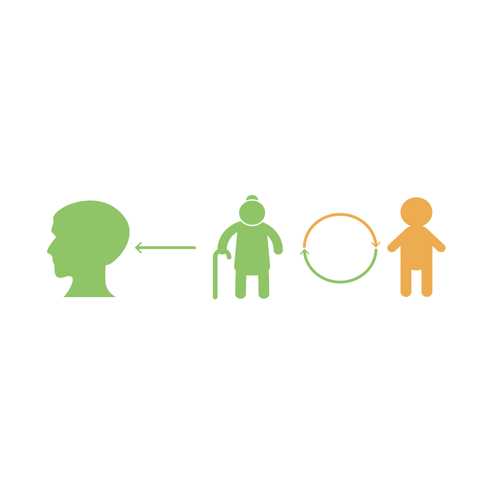

Why I started this project?
YesterdayOnceMore is a project developed for dementia patient in the early stage. Inspired from reminiscence therapy, this project aims at postponing dementia and provides the opportunities for the families and caregivers to interact with the patient.
Globally, dementia affects 36 million people. And about 10% of people develop the disorder at some point in their lives. Around on in four people over 85 years have dementia.
I started this project in 2015, not just because of the shocking data in the background research, but also, this project sometimes reminds me of my parents, my grandparents. Somehow I feel that it is my responsibility to develop this project, as a daughter, as a granddaughter, and this feeling has been motivating me to do something. And I keep telling myself, you should at least do something.